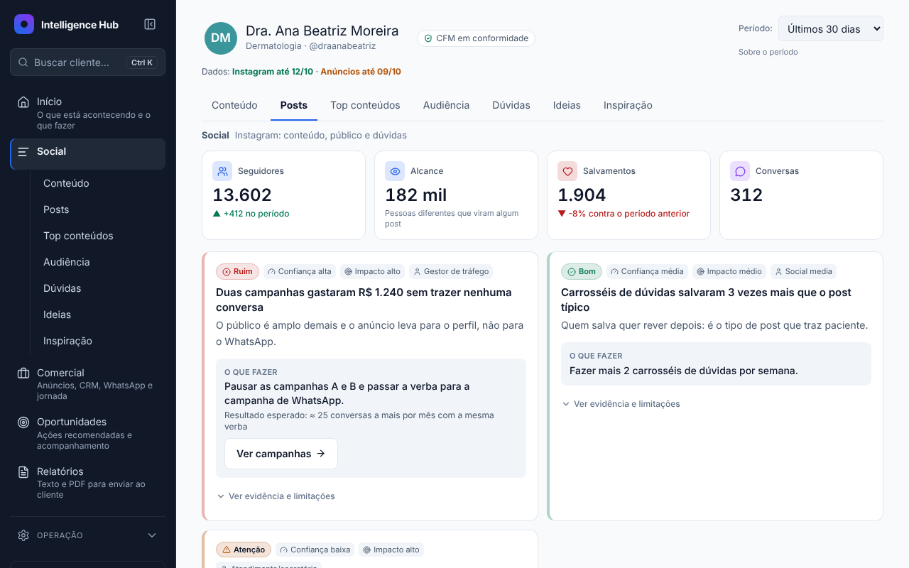
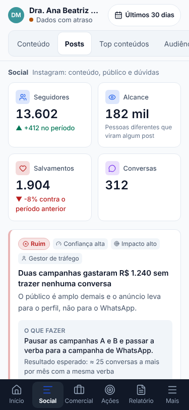

O que mudou, onde ficou cada coisa e o que ainda depende de decisão. Nenhuma tela, métrica, gráfico, filtro ou regra foi removida: o que saiu da frente foi para uma camada mais funda, com caminho de acesso.
Datas no fuso de Brasília, PDF sem o ×100, "Este mês" comparando dias iguais, anúncio julgado pelo próprio objetivo, custo por conversa só de campanha de mensagem (Lana: R$ 29,17 mostrado, R$ 14,29 real).
Camada 1: o que está acontecendo e o que fazer. Camada 2: por quê. Camada 3: todos os dados, fórmulas e metodologia. O usuário vai do resumo ao dado que o originou.
Próxima Melhor Ação com evidência, fonte, regra, confiança, impacto e responsável. Tela Oportunidades com score 0–100, 8 estados, checklist, prazo, histórico e avaliação de resultado.
Paleta azul, barra lateral escura, Inter, tema escuro com tokens próprios. Barra inferior no celular, cabeçalho em 2 linhas no computador, tabelas que viram cartões.
Cinco categorias. Todas as rotas antigas continuam com o mesmo endereço; favoritos e links continuam valendo. A ordem muda por perfil (só apresentação, nunca acesso).
| Perfil | Ordem no menu | Edição em Oportunidades |
|---|---|---|
| Médico (owner) | Início, Oportunidades, Relatórios, Social, Comercial | Sim |
| Estrategista | Início, Social, Comercial, Oportunidades, Relatórios | Sim |
| Equipe (admin) | Igual ao estrategista + Operação aberta | Sim |
| Viewer | Igual ao médico | Não (só leitura) |


| Camada | O que aparece |
|---|---|
| Avisos (sempre visíveis) | Período incompleto ("15 de 30 dias têm dado"), números de hoje e ontem ainda fechando, fonte não conectada. |
| 1 · primeira dobra | Oportunidade principal (categoria, prioridade, título, uma frase, ação, botão "Entender e agir"). Os 4 indicadores com as definições originais: novos seguidores (bruto), alcance (contas únicas ou soma dos dias), taxa de engajamento, salvamentos; cada um com fonte, fórmula e limitação em "O que é isso?". Link "Ver todas as análises". |
| Segunda dobra | Mais 2 oportunidades, resumo do período, links para Social, Comercial e Relatório. |
| 2 e 3 · "Todas as análises" | O que aconteceu (todas as fontes), por que aconteceu, indicadores com referência de mercado, sinais paralelos (alcance, toques em contato e novos seguidores, com a nota "não é um funil"), aviso de cobertura, melhor e pior formato, alcance e interações e tendência geral (com o que foi publicado no dia), engajamento por formato, melhores horários, limitações, PDF e sincronizar. |
A prioridade é uma conta, nunca um texto de IA: cinco notas de 0 a 5 com pesos configuráveis.
Estados: Nova, Em análise, Em execução, Concluída, Resultado avaliado (separado de concluída), Adiada, Dispensada, Expirada (a regra deixou de disparar; o histórico fica). Cada mudança grava quem, quando e nota. A recomendação nunca envia mensagem, mexe em campanha ou altera prontuário: só orienta.
Três matrizes comparam a versão de antes desta rodada (commit 477eb43) com a atual, elemento por elemento: docs/auditoria/matriz-social.md, matriz-comercial.md e matriz-ideias-relatorio-admin.md. Tudo o que elas marcaram como removido foi restaurado:
| Tela | Tinha saído | Onde está agora |
|---|---|---|
| Início | Toques em contato, sinais paralelos, Tendência geral, Salvamentos, Melhor/Pior formato, O que aconteceu | 4 indicadores na camada 1; o resto em "Todas as análises" |
| Anúncios | 6 vereditos originais, barras por campanha (fatia da verba, das conversas, custo), conversas por veredito, nome do objetivo da Meta, nota "sem pixel", régua | Na tela, com os mesmos rótulos e cores; regras e réguas em "Metodologia e critérios" |
| Comercial e Jornada | (nada saiu) | Funil "onde quebra" e checklist em cima; KPIs, painéis, gráficos e tabelas originais em "Ver dados completos" |
| Dúvidas | Filtro por tema, lista com miniatura e @, data e link do post, busca | "Todas as perguntas detectadas", com a regra original (testada: 156 de 156 perguntas iguais) |
| Ideias | Funil e Estágio; ideias da regra original | No cartão e no texto copiado; seção "Ideias pela regra original" |
| Relatório e PDF | Marcar o que entra, "Não incluído por falta de dado", achado do período, insight de formato, Impressões/CTR, colunas Conv./Custo/Freq., ideias de dúvidas | Na tela e no PDF; a checagem CFM agora sugere e nunca apaga |
| Regra | Antes | Agora | Motivo |
|---|---|---|---|
| Veredito de anúncio | Todas as campanhas pela mediana de custo por conversa da conta | Mesmos 6 vereditos e limites (0,6x, 2x, 500 impressões, R$ 30), comparando com campanhas do mesmo objetivo; poucas do objetivo → regra original da conta, com aviso | Tráfego e alcance não prometem conversa; eram marcados como desperdício por definição |
| Custo por conversa (resumo) | Todo o gasto ÷ conversas | Gasto das campanhas de mensagem ÷ conversas delas (a fórmula antiga aparece na metodologia) | Gasto de tráfego e alcance inflava o número |
| Recorte de datas | Data comparada em UTC | Dia de Brasília | Sumiam posts do último dia |
| "Este mês" | Até o último dia do mês | Até hoje | Comparava mês pela metade com mês inteiro |
| Percentual no PDF | Valores abaixo de 1% multiplicados por 100 | Valor como vem | 0,85% saía 85% |
| Dúvidas e Ideias | Detecção original | Original mantida e visível; triagem nova ao lado, com as contagens das duas | Comentários com spam e piada viravam ideia |
| Linguagem CFM no relatório | Não existia | Sinaliza e sugere reescrita, com "manter original" | Texto vai para o cliente |
docs/qa/smoke-rotas.mjs).20261013200000: CTR e CPC por clique no link, custo por conversa só de mensagem, WhatsApp no fuso de Brasília20261013150000: diagnóstico do Comercial por período (hoje a tela usa a base toda)20261013210000: tabela de acompanhamento das Oportunidades (hoje grava só no navegador, com aviso)